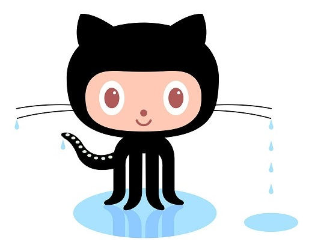

All About GitHub
Key Concepts
Q. What is a version control system?
A. According to Atlassian, "Version control systems are software tools that help software teams manage changes to source code over time." |
Q. What is a Git?
A. According to Noble Desktop, "A Git repository contains all project files and their complete revision history, which is stored in a .git subfolder." |
Q. What is GitHub?
A. According to TechTarget, "GitHub is a web-based version control and collaboration platform for software developers." |
Q. What is the difference between Git and GitHub?
A. According to Devmountain, "Git is a version control system that lets you manage and keep track of your source code history. GitHub is a cloud-based hosting service that lets you manage Git repositories." |
Q. Who started GitHub, and how was it started?
A. According to Nira, "When Tom Preston-Werner, Chris Wanstrath, and PJ Hyett got together in 2008 to collaborate on a project, the three friends fully intended for their side hustle to be just that—a weekend project, and nothing more. But it didn’t take long for them to realize that their idea was potentially much bigger than they’d realized. Their idea would become far more than a weekend project: It would transform how people write and share code." |
Q. What company owns GitHub now?
A. Microsoft acquired GitHub in 2018 and owns it to this day. |
Q. How much does a GitHub account cost?
A. Currently, GitHub offers free accounts for individuals and organizations, but they have some limitations, so many people opt for an upgraded "Teams" account, which costs $4/month. For those who need the most extensive features, Github also offers a top-tier "Enterprise" account, which is better suited for larger organizations and costs $21/month. |
Q. What is the Octocat?
A. The Octocat is GitHub's mascot. It has the head of a cat and the body of an octopus. |  |
Git/GitHub Terms
(Definitions sourced from GitHub Docs.)
| repository: A repository contains all of your project's files and each file's revision history. You can discuss and manage your project's work within the repository. |
| commit: Similar to saving a file that's been edited, a commit records changes to one or more files in your branch. |
| fork: A fork is a new repository that shares code and visibility settings with the original “upstream” repository. Forks are often used to iterate on ideas or changes before they are proposed back to the upstream repository, such as in open source projects or when a user does not have write access to the upstream repository. |
| push: Use "git push" to push commits made on your local branch to a remote repository. |
| pull requests: Pull requests let you tell others about changes you've pushed to a branch in a repository on GitHub. Once a pull request is opened, you can discuss and review the potential changes with collaborators and add follow-up commits before your changes are merged into the base branch. |
| workflows: A workflow is a configurable automated process that will run one or more jobs. Workflows are defined by a YAML file checked in to your repository and will run when triggered by an event in your repository, or they can be triggered manually, or at a defined schedule. |
| issues: Issues let you track your work on GitHub, where development happens. When you mention an issue in another issue or pull request, the issue's timeline reflects the cross-reference so that you can keep track of related work. |
| raw button: With the raw view, you can view or copy the raw content of a file without any styling. |
| blame button: Within the blame view, you can view the line-by-line revision history for an entire file. |
Learn More
| For more information on getting started with GitHub, check out GitHub's online resources here or the video tutorial below from Kahan Data Solutions. |
|